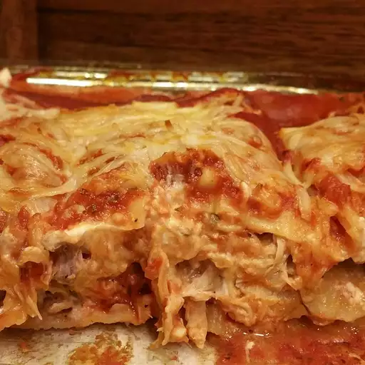

Lasagna

Creamy Chicken Lasagna
This chicken lasagna is made with tender chicken breasts,
red sauce, and lots of mozzarella cheese for a fantastic flavor combination.
Everyone who tastes it raves!
Ingredients
- 6 uncooked lasagna noodles
- 3 skinless, boneless chicken breast halves
- 2 cups shredded mozzarella cheese, divided
- 1 (8 ounce) package cream cheese, softened
- ¼ cup hot water
- 1 cube chicken bouillon
- 1 (26 ounce) jar spaghetti sauce
Steps
-
Preheat the oven to 350 degrees F (175 degrees C).
-
Bring a large pot of lightly salted water to a boil.
Cook lasagna noodles in boiling water, stirring occasionally,
until tender yet firm to the bite, about 8 minutes.
Drain, rinse with cold water, and set aside.
-
Meanwhile, place chicken in a saucepan with enough water to cover; bring to a boil.
Cook until chicken is no longer pink and the juices run clear, about 20 minutes.
Remove chicken from the saucepan and shred.
-
Combine shredded chicken, 1 cup mozzarella cheese, and cream cheese in a large bowl.
Dissolve hot water and bouillon in a liquid measure;
pour over chicken mixture and stir until well combined.
-
Spread 1/3 of the spaghetti sauce in the bottom of a 9x13-inch baking dish.
Cover with 1/2 of the chicken mixture and top with 3 lasagna noodles; repeat.
Top with remaining sauce and sprinkle with remaining 1 cup mozzarella cheese.
-
Bake in the preheated oven for 45 minutes.